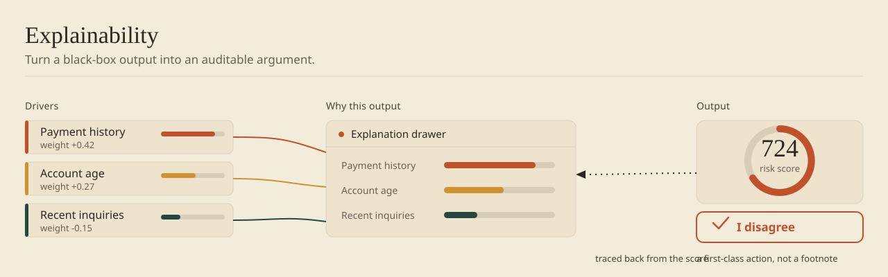

The difference between a recommendation and a decision is accountability. A recommendation you can trace back to evidence is one you'll stand behind. One you can't is one you'll override until you build your own process instead. These patterns are about making the model's reasoning auditable — not complete, not technical, but auditable enough to act on.

1. Feature Importance (What Mattered Most)
Show the top 3–5 features that most influenced the decision, ranked by importance. "This lead scored high because: (1) 85% match on job title [importance: 45%], (2) Company size in target range [importance: 30%], (3) Recent activity on site [importance: 15%]."
Strengths: Simple to implement; users can verify; builds intuition over time.
Weaknesses: Doesn't explain feature interactions; misleading if features are correlated.
2. Counterfactual Reasoning ("What If")
Show what would change the decision. "The system predicted this lead is high-value. If you had [changed one thing], the prediction would drop to medium-value." Or: "You're 3 steps away from the next tier. Here's what would get you there."
Counterfactuals are powerful because users immediately understand the causal story. They see the decision as changeable (not inevitable) and know what to modify.
When counterfactuals shine: Any system where users can take action — sales (close a deal), education (improve a score), recommendations (get better suggestions).
3. Comparative Explanation ("How It Compares")
Compare the recommended item to other options. "I recommended Option A. It scores higher on [dimension 1] but lower on [dimension 2] than Option B."
Comparisons are easier to understand than absolute scores. Users see the trade-off (Option A is riskier but higher-upside vs. Option B is safer).
4. Reasoning Path ("Step by Step")
Trace the decision-making chain. "To predict conversion, I first checked industry (SaaS), then company size (50–200), then engagement (high), then estimated conversion as 73%."
Mimics how a human analyst would reason through the problem. Users see the branching logic.
Works for: Tree-based models, decision trees, rule-based systems. Breaks for: Neural networks (no interpretable path; forcing a narrative is hand-waving).
5. Confidence + Uncertainty Bands
Show not just the prediction, but the range of uncertainty. "Predicted revenue: $45K (±$15K). Actual revenue is likely between $30K–$60K based on past prediction errors."
Uncertainty bands are honest. They communicate: "The model thinks it's $45K, but I'm not 100% sure. Here's the range where it probably lands." This pattern doesn't explain why; it explains how much to trust.
Shipping ML without explanation?
Your users won't trust what they can't verify. I've designed explainability surfaces for fintech analysts and program managers across $2B+ in decision value. Let's compare notes under NDA.
Book a 30-min callImplementation Checklist
- Choose explanation type based on domain — feature importance, counterfactual, or comparative.
- Compute explanations: Tree models = built-in importance; neural networks = LIME/SHAP; rule-based = trace rules.
- Translate to plain language: "Feature X has importance 0.34" → "Job title was the strongest signal (34% of the decision)."
- Test with users: Can they explain why the model decided? Do they trust it more?
- Avoid fake explanations: Don't invent a narrative if you don't understand the model's logic.
- Progressive disclosure: Simple by default (top 3 features); detailed on click.
Trade-offs: Accuracy vs. Understandability
| Method | Accuracy | Understandability | Best For |
|---|---|---|---|
| Feature Importance | 70% | 90% | Expert users |
| Counterfactual | 80% | 85% | Action-oriented users |
| Comparative | 90% | 80% | Choice / trade-off scenarios |
| Reasoning Path | 100%* | 70% | Compliance / critical decisions |
| Full network details | 100% | 5% | Required by law / research only |
*If tree-based.
See This Pattern In Action
- AI-Assisted Due Diligence: Explaining why the model ranked an investment opportunity.
- Programmatic Advertising Platform: Showing which factors influenced media buyer recommendations.
One pattern per month with tradeoffs and code examples. 2,500+ designers already subscribed.